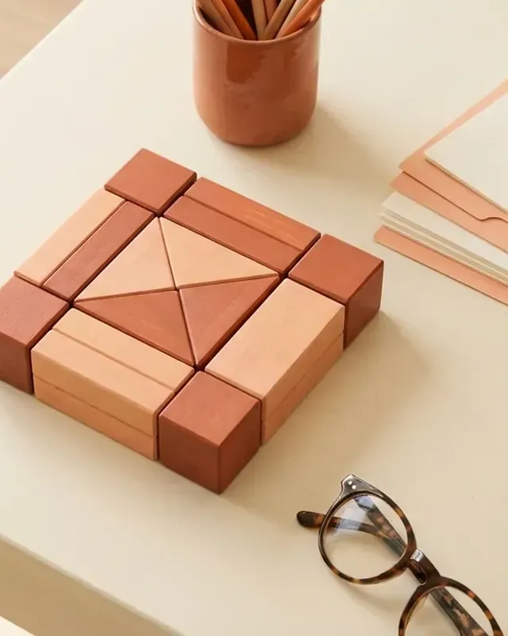
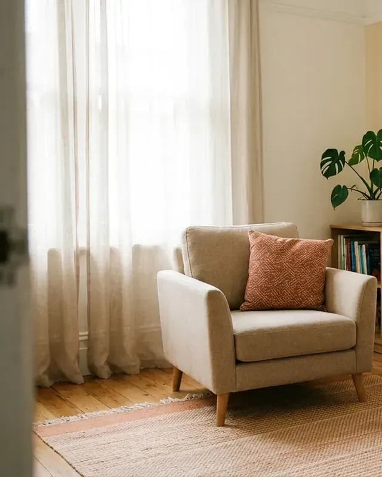
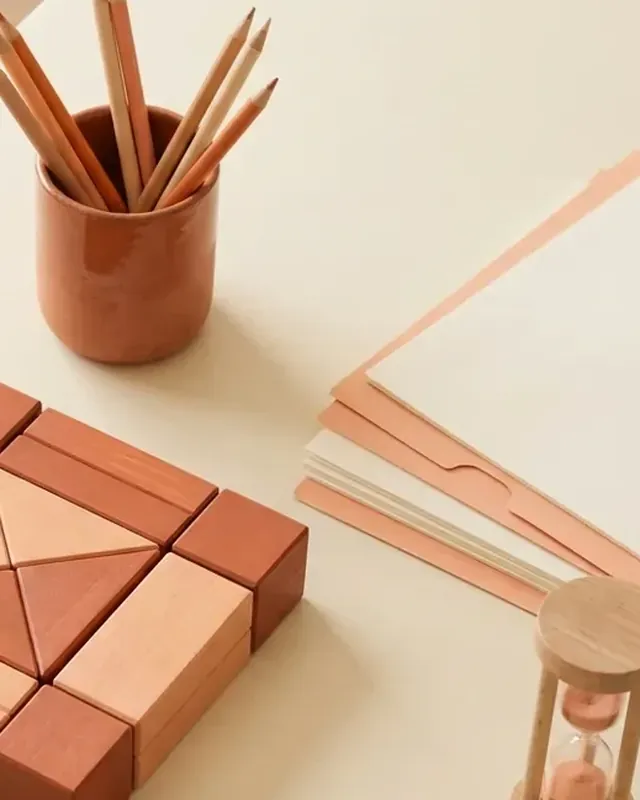
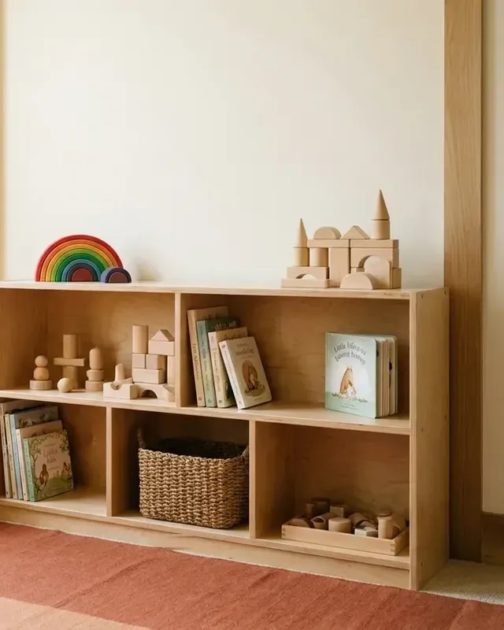
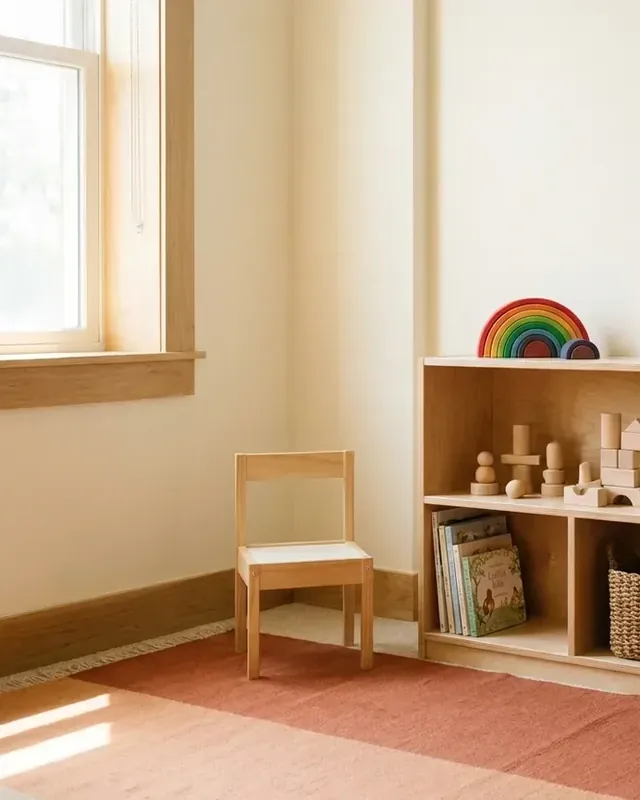
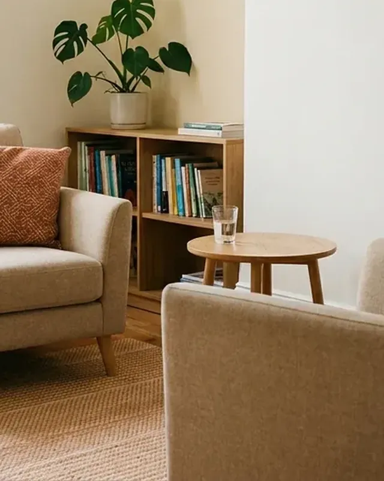

Avaliação Neuropsicológica
Processo estruturado de investigação e diagnóstico dos transtornos do neurodesenvolvimento, entre eles TDAH, TEA e dislexia. Reúne entrevista, aplicação de instrumentos padronizados e uma devolutiva ao final, com a leitura do funcionamento cognitivo e a orientação dos próximos passos.
A avaliação não acontece em um encontro só. São vários, porque cada etapa depende do que a anterior mostrou. O que será investigado se define na entrevista inicial, junto com a família.

Imagem ilustrativa.
Quando esse serviço costuma ser procurado
A escola chamou para conversar e falou em avaliação.
Reconhecer-se nessa frase não é um diagnóstico. É um ponto de partida para a conversa inicial, que é onde o caminho se define.
Como funciona
Entrevista inicial
Com a família, ou com a própria pessoa no caso de adultos, para entender a história e definir o que será investigado.
Sessões de avaliação
A aplicação dos instrumentos acontece ao longo de alguns encontros.
Devolutiva
Uma conversa para apresentar a leitura do funcionamento cognitivo e orientar os próximos passos, com o documento escrito do processo.
Número usual de sessões, prazo total e se o documento é laudo ou relatório: a confirmar.
Perguntas sobre avaliação neuropsicológica
Quanto tempo leva uma avaliação neuropsicológica?
A avaliação é feita em vários encontros, porque envolve entrevista, aplicação de instrumentos e devolutiva. O número de sessões varia conforme o caso e é combinado no início. Faixa usual de sessões e de prazo: a confirmar.
A avaliação pode ser feita online?
A clínica atende presencialmente e também online. A avaliação neuropsicológica costuma exigir parte presencial, pela aplicação dos instrumentos. Confirmar como funciona aqui.
O que acontece depois da avaliação?
A devolutiva apresenta a leitura do funcionamento cognitivo e a orientação dos próximos passos. Quando o caso indica, um dos caminhos é a intervenção neuropsicológica, feita na própria clínica.
Os outros serviços
Quando a demanda muda ao longo do processo, o acompanhamento continua dentro da mesma equipe.

Atendimento Psicológico
“Você convive há anos com algo que pesa e nunca sentou para falar sobre isso.”
Crianças · Adolescentes · Adultos

Intervenção Neuropsicológica
“O diagnóstico veio, e agora ninguém disse o que fazer com ele.”
Após avaliação · Em qualquer idade

Psicopedagogia
“Ele se esforça, mas ler, escrever e estudar continuam pesando mais do que deviam.”
Crianças · Adolescentes

Orientação Familiar
“Em casa, nada do que vocês tentam com seu filho está funcionando.”
Pais e responsáveis
Orientação Profissional
“Seu filho precisa escolher uma profissão e travou.”
Adolescentes · Jovens adultos

Grupo de Apoio Parental
“Você queria conversar com quem passa pela mesma coisa, não com quem opina.”
Familiares · Em grupo
O primeiro passo é uma conversa.
Para tirar uma dúvida sobre avaliação neuropsicológica ou marcar um horário.
Conversar no WhatsApp